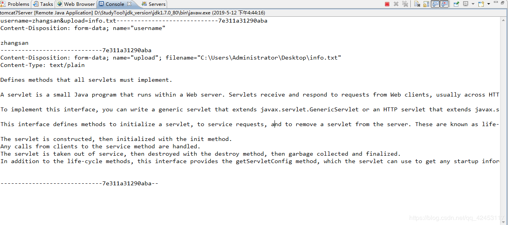
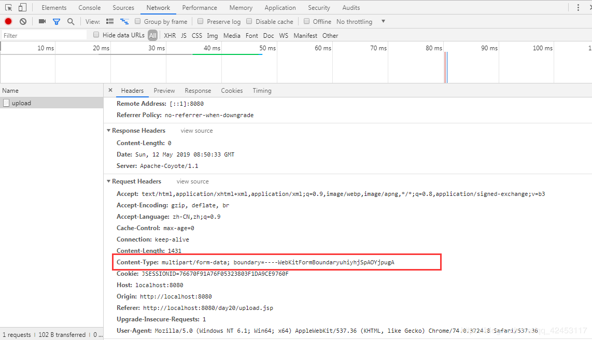

在如今的互联网时代，人们越来越喜欢将自己的数据存放到互联网上，于是便诞生了很多类型的软件，比如360网盘，百度网盘，云盘之类的。所以说，文件上传和下载的功能是现在非常主流的一个功能，应用十分广泛。
那现在，我们就来学习一下，在web中，如何去实现文件上传和下载！
实现web开发中的文件上传功能，需完成如下二步操作：
在web页面中添加上传输入项
在servlet中读取上传文件的数据，并保存到服务器硬盘中。
如何在web页面中添加上传输入项?
标签用于在web页面中添加文件上传输入项，设置文件上传输入项时须注意：
1、必须要设置input输入项的name属性，否则浏览器将不会发送上传文件的数据。
２、必须把form的enctype属值设为multipart/form-data.设置该值后，浏览器在上传文件时，将把文件数据附带在http请求消息体中，并使用ＭＩＭＥ协议对上传的文件进行描述，以方便接收方对上传数据进行解析和处理。
3、表单的提交方式要是post
这是页面的实现，接下来是具体功能的实现。
如何在Servlet中读取文件上传数据，并保存到本地硬盘中?
Request对象提供了一个getInputStream方法，通过这个方法可以读取到客户端提交过来的数据。但由于用户可能会同时上传多个文件，在servlet端编程直接读取上传数据，并分别解析出相应的文件数据是一项非常麻烦的工作。
知道了原理，我们现在来编写一个案例。
新建web项目。
创建upload.jsp文件。
<%@ page language="java" contentType="text/html; charset=UTF-8" pageEncoding="UTF-8"%>
<html>
<head>
<title>Insert title here</title>
</head>
<body>
<form action="/day20/upload">
用户名:<input type="text" name="username"><br>
上传文件:<input type="file" name="upload"><br>
<input type="submit" value="提交">
</form>
</body>
</html>
然后我们创建一个UploadServlet
package cn.itcast.servlet;
import java.io.IOException;
import java.io.InputStream;
import javax.servlet.ServletException;
import javax.servlet.ServletInputStream;
import javax.servlet.http.HttpServlet;
import javax.servlet.http.HttpServletRequest;
import javax.servlet.http.HttpServletResponse;
public class UploadServlet extends HttpServlet {
public void doGet(HttpServletRequest request, HttpServletResponse response)
throws ServletException, IOException {
//request提供getInputStream，用来获得请求体
InputStream in = request.getInputStream();
int temp;
while((temp = in.read()) != -1){
System.out.write(temp);
}
System.out.flush();
in.close();
}
public void doPost(HttpServletRequest request, HttpServletResponse response)
throws ServletException, IOException {
doGet(request, response);
}
}这样代码我们就编写完成了，然后我们准备一个info.txt文件，用于文件上传。
Defines methods that all servlets must implement.
A servlet is a small Java program that runs within a Web server. Servlets receive and respond to requests from Web clients, usually across HTTP, the HyperText Transfer Protocol.
To implement this interface, you can write a generic servlet that extends javax.servlet.GenericServlet or an HTTP servlet that extends javax.servlet.http.HttpServlet.
This interface defines methods to initialize a servlet, to service requests, and to remove a servlet from the server. These are known as life-cycle methods and are called in the following sequence:
The servlet is constructed, then initialized with the init method.
Any calls from clients to the service method are handled.
The servlet is taken out of service, then destroyed with the destroy method, then garbage collected and finalized.
In addition to the life-cycle methods, this interface provides the getServletConfig method, which the servlet can use to get any startup information, and the getServletInfo method, which allows the servlet to return basic information about itself, such as author, version, and copyright. 准备工作已经做好了，现在我们来试着运行一下。

现在我们通过request对象的getInputStream方法获得了整个请求体的信息，但是，请求体里不仅仅是有info.txt文件的文本内容，还有其它的一些参数信息，我们现在该如何将文本内容拿到呢？关键的地方就在于这个分割线，但有同学可能会质疑，如果我的文本内容中就有这么一段分割线的信息呢？这就要看看我们的请求头信息了。

该请求头的参数即是分割线。
虽然，文本内容和产生的分割线相同的情况也可能会发生，但是，几率是非常小的，几乎可以忽略不计。
现在，我们就可以通过分割线来对请求体进行分割。
然后判断分割出来的各个部分中，哪个为文本内容。判断依据：判断哪个部分含有fliename和content-type，证明其是文本内容。
原理就是这样，具体我就不实现了，感兴趣的可以自己写一写。
一路下来，你会发现自己实现文件上传和下载其实是非常麻烦的，好在我们有现成的工具可以使用。
为方便用户处理文件上传数据，Apache 开源组织提供了一个用来处理表单文件上传的一个开源组件（ Commons-fileupload ），该组件性能优异，并且其API使用极其简单，可以让开发人员轻松实现web文件上传功能，因此在web开发中实现文件上传功能，通常使用Commons-fileupload组件实现。
需要知道的是，在Servlet3.0之后，Servlet程序本身就支持文件上传。
但我们还是需要来学习一下该jar的使用。下面是jar包的下载地址。
链接：https://pan.baidu.com/s/1F-fS7JgfilSF9bLA8iVQuQ
提取码：3kfh
复制这段内容后打开百度网盘手机App，操作更方便哦
下载完成后，将jar包添加到我们的项目中。
然后我简单介绍一下使用方法。
1、通过工厂DiskFileItemFactory构造解析器ServletFileUpload
2、用解析器将请求体的各个部分以分割线进行分割，得到多个部分，每个部分就是一个FileItem
3、FileItem中提供了很多API，可以通过isFormField来判断该部分是不是一个文件上传项
4、如果是文件上传项，可以通过getInputStream获得上传文件的内容，通过getName获得上传文件的名字
5、如果不是文件上传项，可以通过getFieldName获得上传表单项的name属性，通过getString获得上传表单项的value属性
接下来，我们借助第三方API来实现一下文件上传。
package cn.itcast.servlet;
import java.io.File;
import java.io.FileOutputStream;
import java.io.IOException;
import java.io.InputStream;
import java.util.List;
import javax.servlet.ServletException;
import javax.servlet.ServletInputStream;
import javax.servlet.http.HttpServlet;
import javax.servlet.http.HttpServletRequest;
import javax.servlet.http.HttpServletResponse;
import org.apache.commons.fileupload.FileItem;
import org.apache.commons.fileupload.FileUploadException;
import org.apache.commons.fileupload.disk.DiskFileItemFactory;
import org.apache.commons.fileupload.servlet.ServletFileUpload;
public class UploadServlet extends HttpServlet {
public void doGet(HttpServletRequest request, HttpServletResponse response)
throws ServletException, IOException {
//request提供getInputStream，用来获得请求体
// InputStream in = request.getInputStream();
// int temp;
// while((temp = in.read()) != -1){
// System.out.write(temp);
// }
// System.out.flush();
// in.close();
//步骤一 构造工厂
DiskFileItemFactory factory = new DiskFileItemFactory();
//步骤二 获得解析器
ServletFileUpload upload = new ServletFileUpload(factory);
//步骤三 对请求体内容进行解析
try {
List<FileItem> fList = upload.parseRequest(request);
//步骤四 遍历集合
for(FileItem fileItem : fList){
//步骤五 判断每个fileItem是不是文件上传项
if(fileItem.isFormField()){
//不是上传文件
String name = fileItem.getFieldName();
String value = fileItem.getString();
System.out.println("普通form项:" + name + "---" + value);
}else{
//是上传文件
String fileName = fileItem.getName();
//解决老版本浏览器文件路径问题
if(fileName.contains("\\")){
fileName = fileName.substring(fileName.lastIndexOf("\\") + 1);
}
InputStream in = fileItem.getInputStream();//得到的是文件内容
System.out.println("文件上传项：" + fileName);
//将内容写入文件
File file = new File("C:\\Users\\Administrator\\Desktop\\info_test.txt");
if(!file.exists()){
//文件不存在，创建文件
file.createNewFile();
}
FileOutputStream out = new FileOutputStream(file);
int len;
while((len = in.read()) != -1){
out.write(len);
}
in.close();
out.close();
}
}
} catch (FileUploadException e) {
e.printStackTrace();
}
}
public void doPost(HttpServletRequest request, HttpServletResponse response)
throws ServletException, IOException {
doGet(request, response);
}
}然后运行项目，在桌面就会产生一个新的文件，打开文件，发现文本内容被成功写入到了该文件中。
这样，一个非常简单的文件上传案例就完成了。接下来，我们对FileUpload工具的核心类进行一个详细的学习。
DiskFileItemFactory 是创建 FileItem 对象的工厂，这个工厂类常用方法：
public DiskFileItemFactory(int sizeThreshold, java.io.File repository)
构造函数
public void setSizeThreshold(int sizeThreshold)
设置内存缓冲区的大小，默认值为10K。当上传文件大于缓冲区大小时， fileupload组件将使用临时文件缓存上传文件。
public void setRepository(java.io.File repository)
指定临时文件目录，默认值为System.getProperty("java.io.tmpdir").
注意：上传文件优先保存在内容缓冲区，当内存缓冲区不够用，就会在硬盘上产生临时文件，临时文件保存在指定的临时文件目录中，临时文件与源文件的内容相同。
然后是如何解决中文乱码问题，有同学可能会问，post请求处理乱码问题，使用requeset.setCharacterEncoding("utf-8")不就行了吗，在这里它还真就不行了，不信的话可以自己试一试。其实，在解析器中提供了API来解决这个中文乱码问题。你只需要使用ServletFieUpload对象调用setHeaderEncoding("utf-8")方法即可解决。
还有一个问题，就是随着请求次数的增加，服务器的临时文件会越来越多，这加重了服务器的负担，所以当上传文件完成时，我们应该删除临时文件。在程序的最后调用FileItem对象的delete()方法即可删除。
ServletFileUpload 负责处理上传的文件数据，并将表单中每个输入项封装成一个 FileItem 对象中。常用方法有：
boolean isMultipartContent(HttpServletRequest request)
判断上传表单是否为multipart/form-data类型
List parseRequest(HttpServletRequest request)
解析request对象，并把表单中的每一个输入项包装成一个fileItem 对象，并返回一个保存了所有FileItem的list集合。
setFileSizeMax(long fileSizeMax)
设置单个上传文件的最大值
setSizeMax(long sizeMax)
设置上传文件总量的最大值
setHeaderEncoding(java.lang.String encoding)
设置编码格式
setProgressListener(ProgressListener pListener)
实时监听文件上传状态
注意：如果是文件上传，我们可以通过getFieldName()方法获得文件名，如果不是文件上传，我们可以通过getName()方法获得表单项的name属性，getValue()方法获得表单项的值，其中，getValue()方法如果获得的是中文数据，会产生乱码，此时，基本的处理乱码问题的API都不管用，但也不用担心，我们可以使用它提供的API。它重载了一个getString(java.lang.String encoding)方法，只需要将utf-8作为参数传入即可。